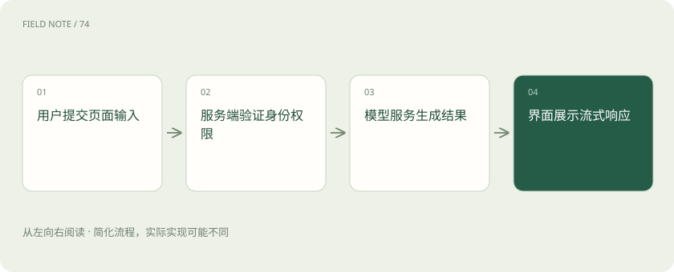
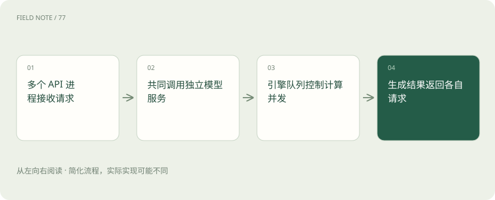
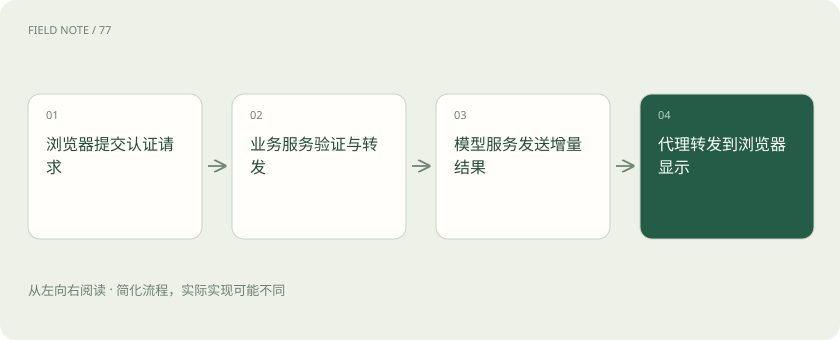

先读哪些知识
先用一个类比理解
类比只帮助建立直觉，不等同于技术的完整机制。
一图看懂

把一次点击拆成责任链
Gradio 和 Streamlit 让 Python 团队较快展示模型输入输出，FastAPI 组织可被其他程序调用的 HTTP 服务，React 组织浏览器界面和交互。Vercel AI SDK 提供 AI 应用的调用及界面流式协作能力；它不是显卡推理引擎，也不意味着必须把所有模型部署到同一家云。选型应从用户流程与维护团队出发。
同一技术可以跨多个层次，但职责仍应清楚。例如演示工具也能托管页面，不代表它自动承担组织级数据权限与审计责任。
对于零基础读者，可以把选型顺序理解为先证明流程有价值，再明确服务合同，最后完善交互体验。每一步都应留下可迁移的业务规则，避免规则只藏在某个按钮的事件函数里。
Gradio 的演示价值与队列
Gradio 适合把模型函数包装成输入组件、结果组件和事件流程。其队列与并发限制有助于控制昂贵调用，但页面显示排队不等于后端拥有无限容量。上传文件需要限制大小和类型，模型取消也要传递到执行侧。多个事件若共享同一显卡，应检查并发分组是否真的限制了共享资源。
队列长度还需要反馈给用户。等待过久时明确说明任务是否被接受，避免用户不断重复点击，让原本拥堵的资源池更加拥堵。
演示环境里的公开分享地址应有明确用途和寿命。试用结束后关闭入口、清理上传文件并撤销临时凭据，是演示生命周期的一部分。演示工具提供方便入口不代表可以忽略数据访问范围。
Streamlit 的重运行模型
Streamlit 的常规交互会触发脚本重新运行，Session State 帮助在同一会话中保留状态。普通局部变量、会话状态和共享缓存的作用范围不同，不应把用户的私有问答放进所有用户共用的缓存。表单和局部重运行可以改变交互成本，但对话记录要长期保存时仍需要明确的持久化存储。
页面刷新、新标签页和服务重启可能具有不同状态结果。产品应告诉用户哪些内容临时保存，哪些内容已经正式进入历史记录。
如果缓存的是一个昂贵的共享模型对象，需要判断该对象是否允许并发调用；如果缓存的是检索结果，需要把用户权限范围纳入缓存设计。缓存命中率高但返回别人的内容，是正确性失败。
图解：业务服务怎样隔离模型进程

FastAPI 与多进程内存
FastAPI 提供路由、请求校验、依赖和安全机制的组织方式，多 worker 运行在不同进程。若每个进程启动时都加载一份大模型，会重复占用内存或显存。源材料中的多实例报错提示应核对进程模型与资源归属，不能把增加 worker 当成免费的吞吐扩展。可以让 API 进程调用独立模型服务，使业务扩容和显卡容量分别管理。
异步处理主要帮助等待网络等操作，不会自动让显卡计算速度翻倍。阻塞计算若占住请求处理资源，仍需要适当的隔离和容量限制。
多实例还会影响会话变量。用户请求落到另一进程时，上一进程的内存字典可能根本不存在。长期业务状态应有清晰存储与版本规则，不能只依赖固定连接维持偶然的一致。
React 与 AI SDK 的产品职责
React 适合细致管理页面组件、编辑、历史列表和交互反馈；AI SDK 的 UI 与模型调用抽象可以帮助处理流式消息和模型适配。产品仍需要确定消息标识、重试语义和中断后的恢复。屏幕上逐字出现的文字可能只是尚未完成的中间结果，涉及审批或账务时不能在文本流完成前把它当成最终业务决定。
消息格式和传输协议需要两端一致。把一个供应商的原始流直接转交给另一个界面组件，可能出现增量重复、结束缺失或工具结果无法展示。
复杂产品也可以保留演示页面作为内部验收入口。它可以帮助模型团队快速重现某个输入，但正式用户流仍应使用统一的权限和业务服务，以免两个入口产生两套相互冲突的规则。
网络链路决定流式体验
浏览器、反向代理、业务服务和模型服务之间每一跳都可能超时、缓冲或断开连接。后端已经生成首词，代理却攒满缓冲再发送，用户仍会感觉卡顿。应分别测服务器首词时间与浏览器收到首段时间，记录请求标识贯通链路。连接断开之后要有取消或回收机制，避免用户离开后显卡继续完成无用任务。
超时应沿链路协调。入口超时短于合理生成时间会制造假失败，客户端自动重试又可能产生两个仍在执行的任务。
如果前端显示生成失败，后端却已经执行了操作，用户点击重试可能重复写入。涉及真实动作时应使用可核对的任务标识，并让界面查询任务状态，而不是仅凭聊天气泡猜测执行结果。
登录与授权的最后边界
登录确认身份，授权决定该身份能读取哪些工单、使用哪些模型和执行哪些动作。浏览器隐藏按钮不能代替服务端权限检查，跨域配置也不是用户认证。供应商密钥应留在可信服务端，前端只持有适当范围的用户凭据。工具执行与文档检索都应再次检查业务权限，不能因为界面漂亮就把内部接口裸露出去。
审计日志应记录操作主体和结果，但应控制敏感日志正文的暴露。将完整设备日志写进所有调试输出，会扩大数据访问范围。
认证过期后的行为也要提前定义。应暂停敏感数据读取并提示重新登录，不能让界面继续展示新的私有结果。历史已经显示的内容是否清除，则需要结合产品的数据保护要求决定。
图解：流式响应穿过四层边界

演示走向产品的验收案例
设想工程师用演示页上传设备日志，后来需要让数百名维修人员查询各自站点。保留界面原型可以继续验证提问方式，同时把文件解析、模型调用和权限规则移到清晰服务边界。上线验收应覆盖两个用户同时提问、刷新页面、断网重连、重复点击和会话过期，确认不会串记录或重复执行工单操作。
界面上线不是终点，还需要定义失败提示和恢复入口。用户应能判断回答未完成、服务不可用与没有权限之间的差异，避免把系统故障误解成设备安全结论。
最终验收还包括可理解性。错误信息应告诉用户能采取什么动作，比如缩短文件、稍后重试或联系管理员；内部堆栈和密钥不应进入提示。技术链路复杂时，清楚的失败反馈尤其重要。
上传文件的生命周期也属于服务合同。文件接收、解析完成、结果存储和原件删除应分别有明确时点；用户关闭浏览器并不等于服务端文件已经清除。需要在失败路径同样回收临时资源，否则一次解析异常就可能留下无人管理的私有日志。
放在一起对比
| 方案 | 负责 | 需要另行解决 |
|---|---|---|
| FastAPI | HTTP 路由与请求校验 | 界面与推理执行另行组织 |
| Gradio | 模型事件与输入输出组件 | 检查队列和共享计算资源 |
| Streamlit | 脚本重运行与会话状态 | 区分会话和共享缓存 |
| React / AI SDK | 浏览器交互与流式消息 | 权限须由服务端强制执行 |
放进真实场景
教学场景：日志演示页升级为跨站点门户后，前端只提交任务标识，服务端校验站点权限并保存结果，刷新页面可继续查看进度。
别踩这个误区
想一想
给 FastAPI 增加四个 worker 为何可能导致显存不足？
进程可能各加载一份模型，应分离 API 与模型服务并检查进程级资源。
关联阅读
资料与边界
本文为原创知识讲解。类比和图示经过简化；示例数字不代表实测或报价。整理日期：2026-11-05。文末列出对应技术的原始资料，具体功能与版本支持请以原文为准。
按完整目录逐篇阅读